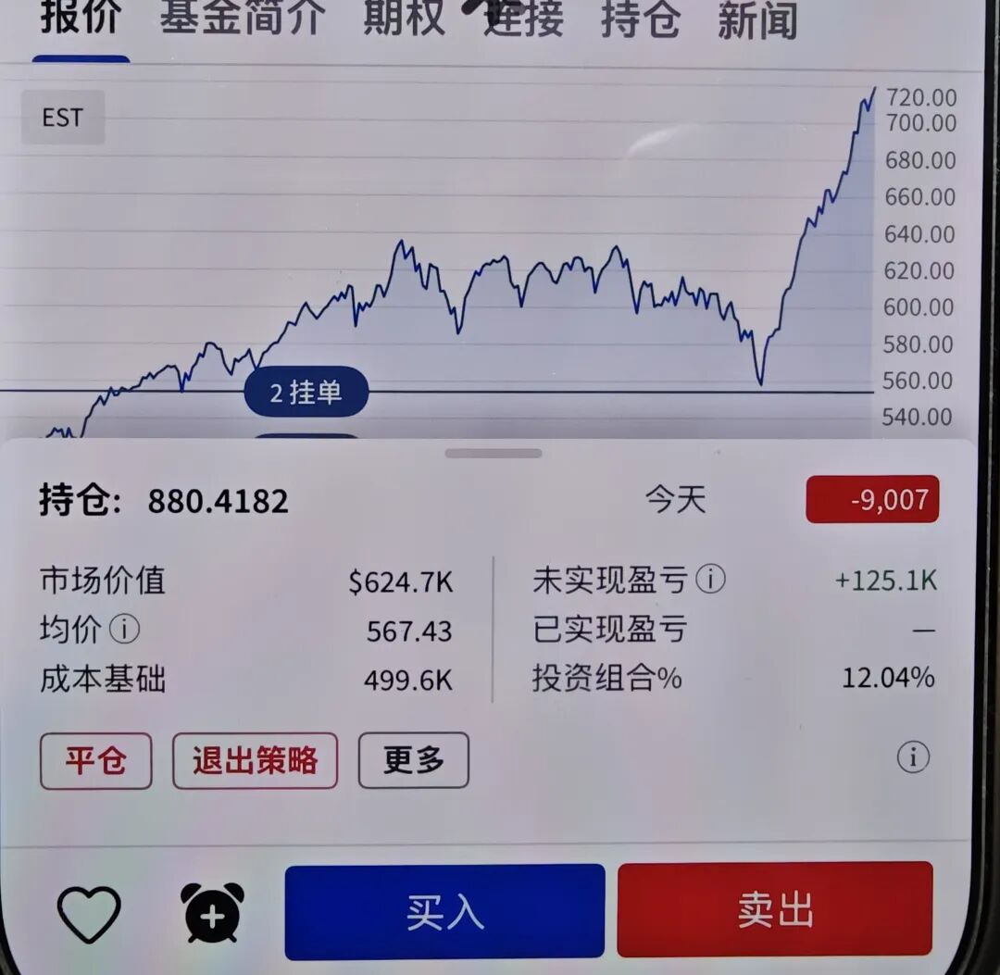

天玑 · 金渐成 ·
纳指和标普500继续创新高。
进取型账户整体波动较大，主要是英伟达、台积电、博通暴涨4.4-5.5%，其余个股涨跌幅较小。
稳健型账户中，纳指100+标普500这两个宽基指数ETF占比逼近70%，消费龙头股整体微涨，医药保健板块微跌。
防守型账户，几乎没波动。
这几个大的账户接下去几乎不会再动。但我准备的最小账户已经改造好了，准备用来做一些短线（1年内的交易操作），这一轮下跌修复中，建仓并加仓纳指100和标普500，占比都提升到了12%左右，合计约24%，伯克希尔8%，这几样用于压仓不动。

手痒的时候，我就可以操作这个账户。不过现在很少再看账户了，都忙着带娃。
还是过去两三年一直说的：
每个人都要结合自己的情况，找到适合自己的方式，适合自己的才是最好的；
不要神化任何人，没有任何人值得。正如“尽信书不如无书”，所以也不要全部都以我为标准，我也有操作得不好的，最重要的是通过这个窗口，找到最适合自己的方式和体系。
看对方的交易操作，最好要搞懂他的预期/诉求和底层逻辑。相比结果，要更注重验证过程中的正确性。
整体来说，无论是对一个人还是一件事，都是“验证，怀疑，再验证，再怀疑，再验证;打破重建，再打破，再重建，不断建立认知”这个过程。
错过或操作失误，也不要内耗和自责，不要为打翻的牛奶而懊恼，你只需穿过沼泽地，而不是打败每条鳄鱼。
投资最重要的三要素是：资金、耐心、勇气。
资金是前提，决定你能不能留在牌桌上；勇气来源于极低的成本和充足的仓位，敢于在暴跌中捡‘带血的筹码’；耐心则是投资中花费时间最多的部分，不仅要耐心等暴跌的击球区，买入后还要耐心等复利的释放。
在股市中，赚价差和构筑现金流，是两种不同的玩法。这个感兴趣的可以多琢磨一下。
我个人的习惯是不把所有资金都投入到一个市场、一个品种或一个方向。盈利后达到预期，就及时提取一部分利润或本金，落袋为安，用于构筑防守型资产，增加资产的“安全垫”，或用于暴跌时机会出现了加仓。
万物皆周期，繁荣之后有萧条，萧条之后有复苏。最重要的还是自己要有常识和逻辑，能做好判断和决策，而不是让决策要基于情绪、传闻与愿望。
以上内容，全部都已经重复过几次。
… …
这些天老美来访，看了下名单，主要是金融行业的居多。我在想或许是想要我们加大金融领域的开放，或让人民币升值。
我是把每年5万美元的额度都用满，不管它升值不升值，额度是有限供应的，对我来说是好东西。
基于我们世界工厂的地位，出口总额大于进口总额，升值弊大于利。比如一家企业出口的商品100万美元，原来可以换回720万人民币，现在只能换回680万人民币，对企业的影响还是很大的。
如果继续升值，导致100万美元只能换630万人民币，那对企业的伤害会很大，倒贴钱。
这两天我也在整合一些信息，发现一个很有趣的现象：
现在地方政府土地卖得不理想，一些母基金投出来的项目开始有动作，无论是在一级市场，还是二级市场。
简单来说，就是从土地财政时的卖土地+税收为主，慢慢转型到卖股权+税收为主。
税收这方面，咱们作为经营者，一定要合规，现在金四系统不跟你开玩笑。
当然，也不要提前焦虑，做好合规，生活无非是见招拆招。想多了都是问题，想开了全是答案。
有人会很焦虑未来应该做什么？我也不懂，看不明白的时候，按兵不动，静下来认真观察一阵子，耐心等待，可以避免掉坑里。
这个世界有两种价值，一种是提供精神愉悦的价值，第二种是提供效率价值比如增加财富、延长寿命、节约金钱、节约时间。
普通人无论做什么，积攒财富都很难很慢，这就需要从打工坐班思维，转换成商业思维，适当依赖杠杆，比如金融上的赚钱（钱生钱）、管理、知识产权（著作等）、个人IP等。
世界很大，我们都是普通人，尽量不说大话，多看多学。
… …
本来早上要更新的。
结果早上接到老师的反馈，说老三在学校骂老师。
听到这消息，我一口老血差点喷出来。尽管我很诧异，但也只能按压住一堆的疑问，去学校把他提回家，了解前因后果。
平时我情绪管理得还算不错的，在得到他确认骂老师后，终究还是挂了满脸寒霜。
一系列问询后，把起因经过结果等都了解清楚，终于搞明白是怎么回事：
他在学校跟其他小朋友学口头禅，又不明白那是什么意思。于是在他很喜欢的老师经过身边时，用在了老师身上，被同学当场报告给老师。
我给他解释清楚这些词的具体含义和用法后，让他自己去写检讨书。
写完我又协助他修改了一遍，一边修改，一边是心破碎的声音，最终从一张张拓展成4张纸的内容。
以后要多加强孩子的文化学习，“没文化真可怕”这句话绝对是正确的。
改完我又一口老血喷出来，让他简单扒几口饭，就带他去学校，让他自己去找老师解释清楚并道歉，附上检讨书。
回家路上，我累得仿佛整个人被抽空了，这种精神消耗实在太大。以后老四老五要从小抓起，学好词语的运用，可别再给我增添这种问题了。
到家就瘫在座椅上，一动也不想动，午饭都没食欲。这下总算了解那些经常因为孩子问题被老师/学校叫家长，家长是怎样的心情。
猝不及防，被娃来了个迎头暴击。
就这样吧。